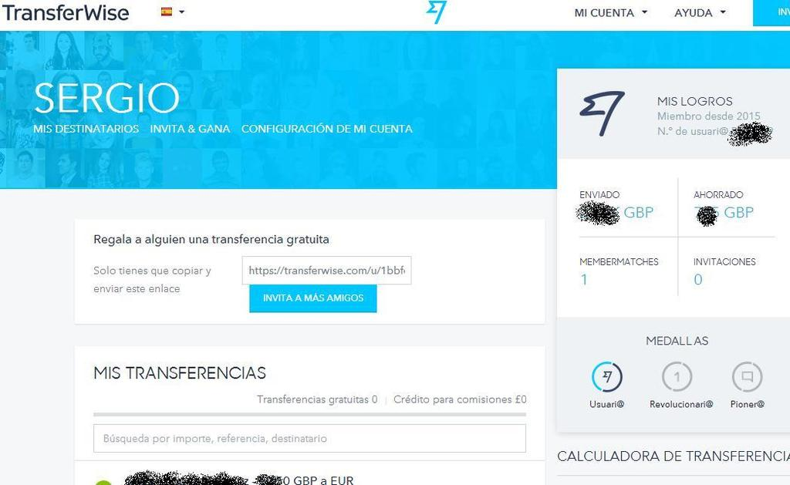
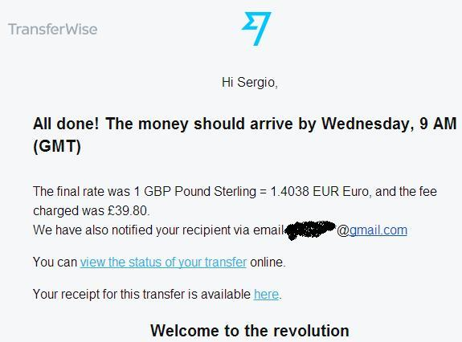
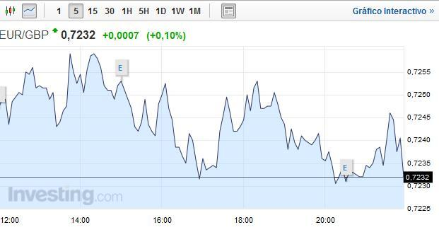
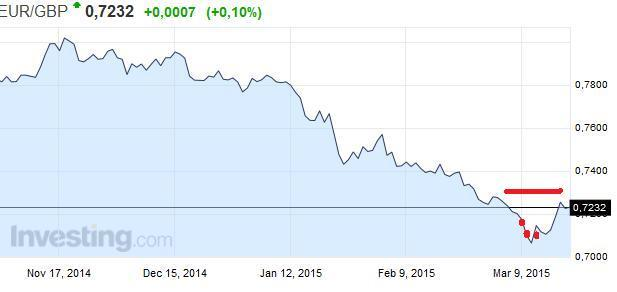

Si vas a viajar al extranjero por un largo tiempo y no te gusta regalar dinero a los bancos puede que este post sea de tu interés.
Los bancos normalmente cobran una comisión fija por transferir tu dinero aunque casi siempre te dirán que no tendrás comisión fija al llevar dinero desde el extranjero.
Sin embargo lo que no te cuentan es que al hacerte el cambio de divisa te aplicara una comisión que normalmente es del 3%.
Esta ganancia normalmente se la llevan brokers pertenecientes al banco. Para transferencias altas normalmente si eres cliente de tu banco quizás te puedan bajar la comisión por debajo del 1% aunque nunca sabrás el momento en la que se hizo, ya que no podrás saber previo a la transferencia el dinero al que se va a efectuar cambio. Si son días en los que la tasa esta volátil, perder un 1% de tu dinero será algo muy probable.

Yo he estado viviendo bastante tiempo en el reino unido así que os diré desde mi experiencia que Transferwise es una manera elegante y sencilla de pasar dinero entre dos bancos de diferente país.
En algunos casos como reino unido al tener Transferwise una cuenta local para transferencias no tendréis ningún tipo de comisión adicional y no tendrán límite de cantidad.
Sin embargo a otros países vuestro banco puede que os cobre una comisión de transferencia internacional ya que si no hay cuenta local deberéis pagar a la sede de Transferwise que se encuentra en Estonia.
Por ello será bueno que os informéis en vuestro banco antes de realizarla.
Si queréis consultar los diferentes cambios de divisa aquí os dejo una página en la que podréis saber de antemano a cuanto está el cambio y también los diferentes eventos que podrán hacer fluctuar la divisa.
Investing_currencies
Una vez creada la cuenta:
Para realizar los movimientos entre cuentas tendréis dos opciones, o bien hacer una transferencia bancaria desde la página de vuestro banco, o bien pagar con tarjeta de crédito hasta 2000 euros.
Lo primero ir a empezar ahora. Una vez dentro aparecerá el siguiente panel:
En la parte derecha del panel podéis encontrar vuestro número de usuario que casualmente será el valor de la referencia en el caso de la transferencia,
el dinero transferido e incluso una estimación de cuanto os podéis haber ahorrado utilizando Transferwise con respecto a una cuenta corriente con una calculadora en la que podréis saber cuál es el cambio que os hará Transferwise.
Si bien a veces no está actualizado y cuando pasáis al primer paso de la transferencia se os dará el cambio que os hará transferwise:
En la parte derecha del panel podéis encontrar vuestro número de usuario que casualmente será el valor de la referencia en el caso de la transferencia,
el dinero transferido e incluso una estimación de cuanto os podéis haber ahorrado utilizando Transferwise con respecto a un banco normal.
Si bien a veces no está actualizado y cuando pasáis al primer paso de la transferencia se os dará el cambio que os hará Transferwise:
En este caso como podéis ver se me da un cambio de 1.375 euros por libra. Tomando el valor incluido en la parte superior (0.7248 libras por euro o lo que es lo mismo 1.3795 euros por libra quiere decir que el cambio se acerca bastante al enviado.
En este caso ha habido un cambio brusco en la última hora. Normalmente os aparecerá un cambio que podrá ser mayor o menor al del momento pero acercándose bastante.
Transferwise suele ganar bastante debido a que no cambia realmente dinero en cambio de divisa sino que utiliza el propio dinero de transferencias entre países entre otros usuarios, es decir, un sistema peer to peer que consiste en emparejar tu solicitud con la de otras personas. La tasa de cambio que queréis es ajustada (normalmente es entre 0.5 y 3 %) pero yo una vez la tuve en 0.2%.
Si la dejáis en 0.5% podría tardar algo mas aunque a mí lo máximo que me tardo fue una semana siendo la transferencia mayor de 8k libras.
Los pasos siguientes que deberéis rellenar es la información de la cuenta del emisor y la cuenta del destinatario así como sus datos personales.
Toda la información de la cuenta a la que deberéis hacer el ingreso aparecerá en el cuarto paso. Una vez realizado el tercer paso recibiréis un email en el que se os comunica que la transferencia está en espera,
en el momento que Transferwise reciba el dinero se empezara a realizar la conversión de moneda previa a la transferencia hacia el banco del otro país.
Aquí tenéis que tener mucho ojo porque aparecerá una pestaña en el panel donde aparece la cantidad que se perderá siendo de 0.5 a 3%.
En el caso de no tener prisa por recibir el dinero podréis poner la tasa mínima del 0.5% que podréis perder. Antes de realizar la transferencia también aparecerá el dinero que Transferwise se quedara por realizaros la transferencia que es de un 0.5% del total.

En mi caso la transferencia más alta que realice fue de 8000 libras y la comisión que me cobraron fue de casi 40 libras. Por lo que para que os hagáis una idea por una 24 k libras la comisión alcanzaría las 120 libras. Una comisión minúscula en comparación con las perdidas por cambio de divisa.
Tras dos años trabajados espere a trasnferir el dinero hasta pasado un tiempo sabiendo que había cambios en la zona euro que podían presagiar una bajada del euro,
tras analizar el panorama decidí esperarme hasta marzo de este año, un poco antes de las elecciones británicas que podían cambiar el panorama, y un poco después de la crisis política vivida en Grecia.

Si vas a transferir tu dinero ten en cuenta cambios de este calibre ya que una bajada de un 10% o 15% en la divisa puede suponer unos miles de euros más o menos,
en el caso de llevarte tus ahorros de varios años hay que mirar el tema con lupa y saber esperar el preciso momento.
En este caso Transferwise al ser tan rápido y darte información precisa del cambio hace que puedas hacer los movimientos tranquilamente.
Yo empecé a retirar un poco antes de que dejara de subir la libra y el resto cuando empezó a volver al estado normal ya que tener la libra en su máximo en 7 años y con una volatilidad tan alta es algo que no se da todos los días.
Si la moneda que vas a cambiar esta en un país donde la situación es algo inestable ecnomicamente o estan hechos por suceder piensa bien cuando retirar.
En rojo momentos en los que yo realice transferencias. Para saber más o menos el comportamiento de la moneda estuve siguiendo la siguiente página en la que el analista se acercó bastante a los resultados.
http://www.poundsterlingforecast.com/

© 2016 - All Rights Reserved - Diseñada por Sergio López Martínez
![[Valid RSS]](https://www.feedvalidator.org/images/valid-rss-rogers.png "Validate my RSS feed")